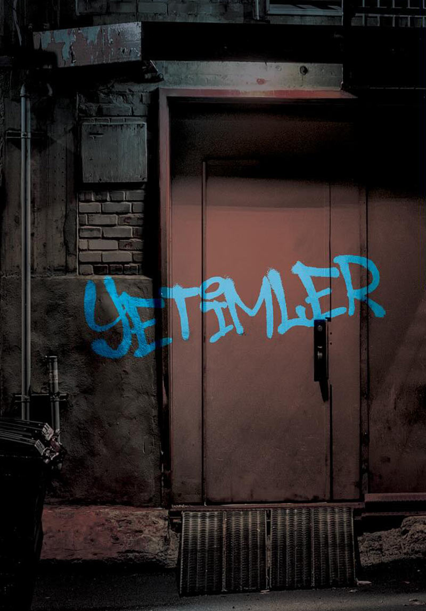
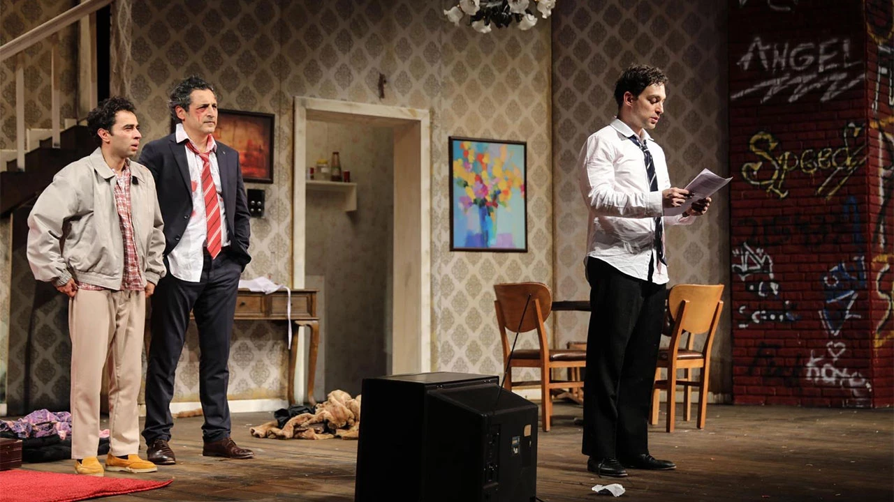
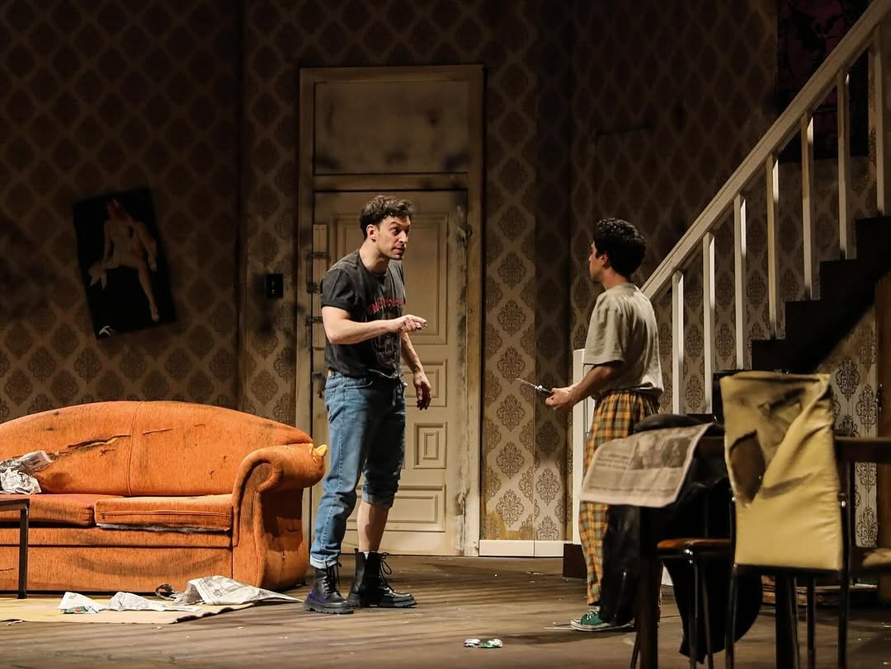
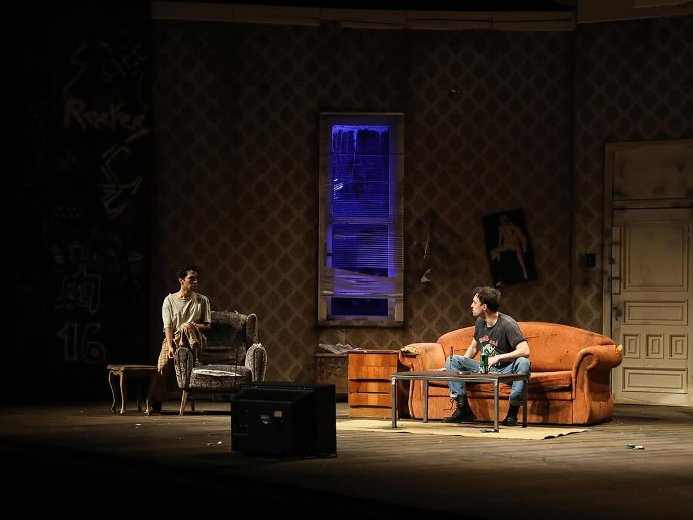
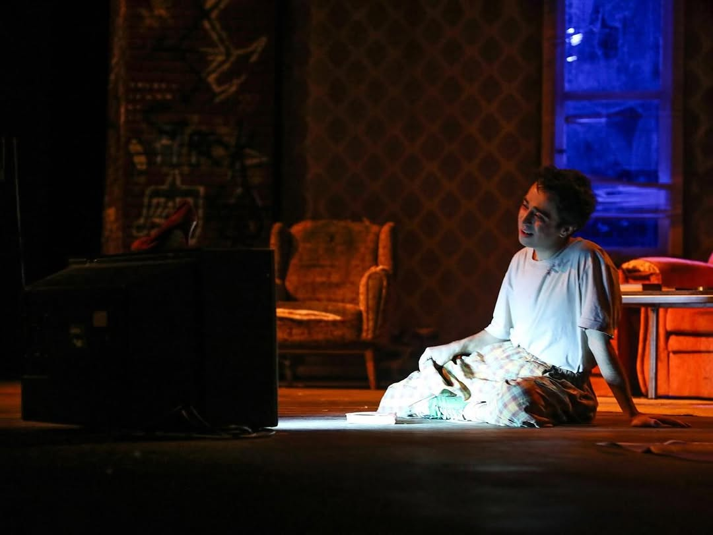
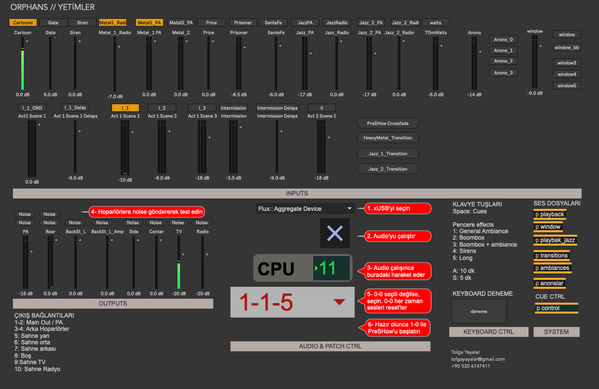

Sound design and multichannel composition for the theatre production directed by Jason Hale at Bilkent University.
For this production I designed and composed an extended immersive sound environment using an 8-channel loudspeaker system. Rather than deploying isolated sound effects, the score functions as a continuous acousmatic layer shaping the psychological space of the stage.
The work includes a large-scale pre-show soundscape and a two-hour evolving sonic environment built from processed recordings, environmental textures, and composed electroacoustic materials. Sound operates as a spatial dramaturgical element, subtly shaping tension, atmosphere, and the perception of the stage environment throughout the performance.
More information and tickets: tiyatrolar.com.tr





